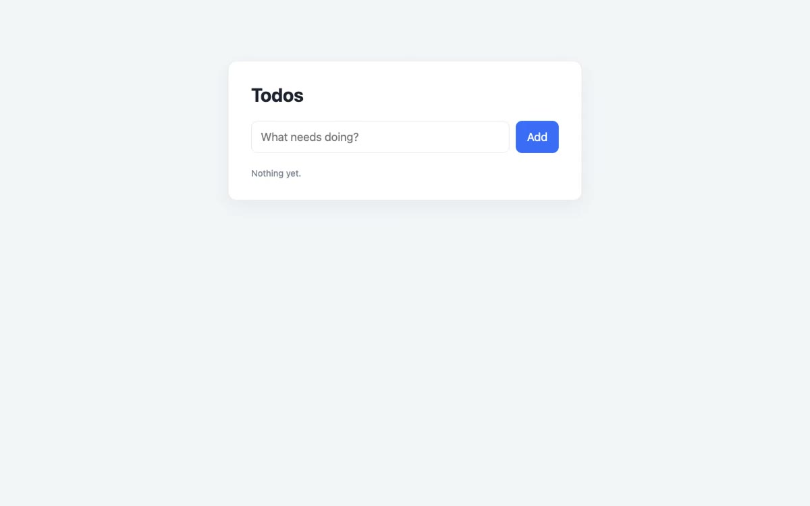
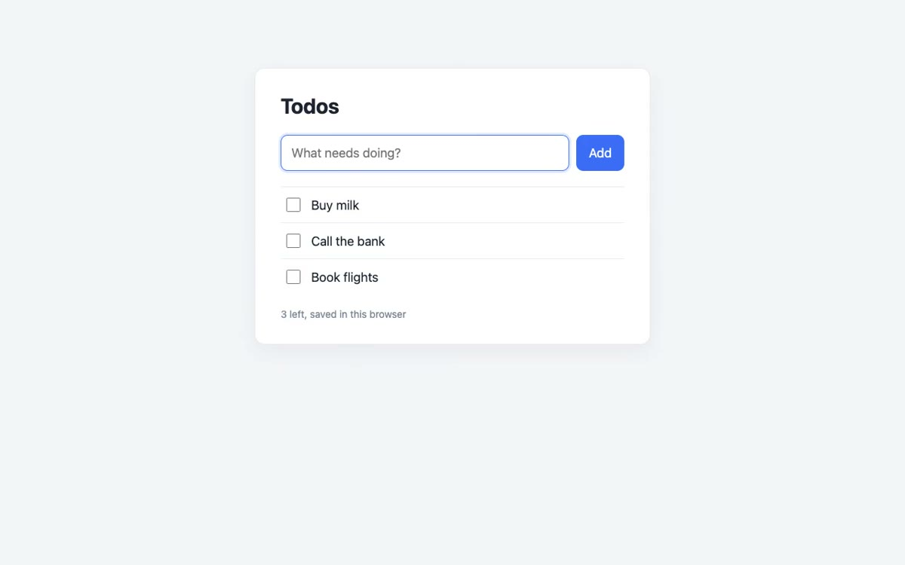
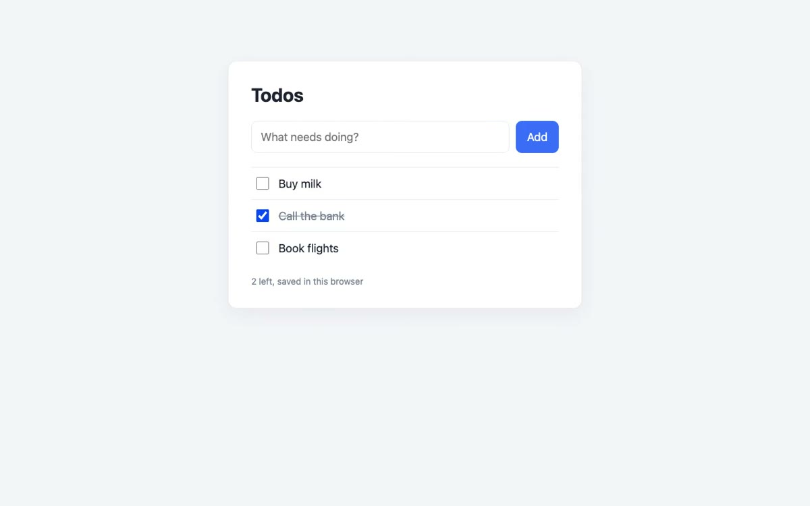
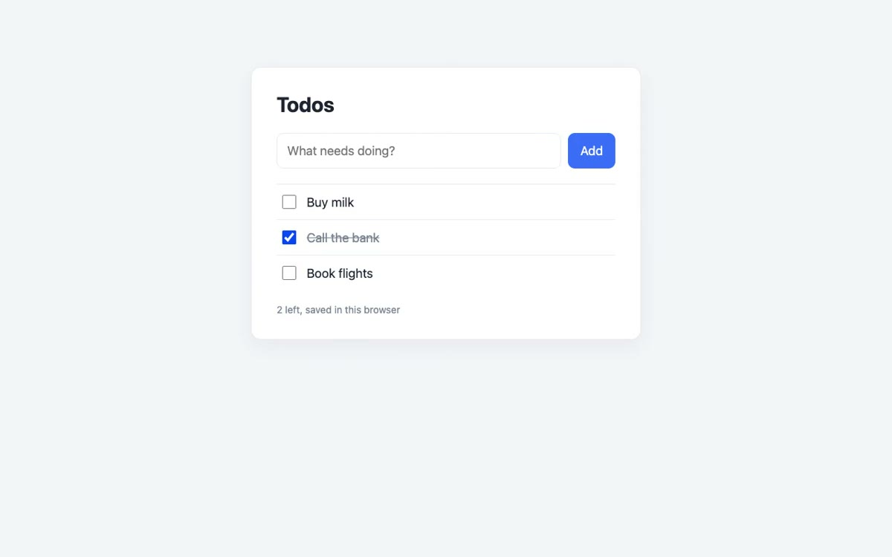

Before: "record a clip of the todo app" without the skill
puppeteer page.screencast() of the flow, straight to a file (a real run; frames from the file)

0:00

0:03

0:06

0:08, after the reload
Timing follows the frame count, not the clock: this take played 9.2 s for 8.2 s of real time, and a page showing a running clock played 9.7 s of real time in 4.1 s.
The whole window at 1x. No title, no step captions, no end card. At website width the list is a smudge.